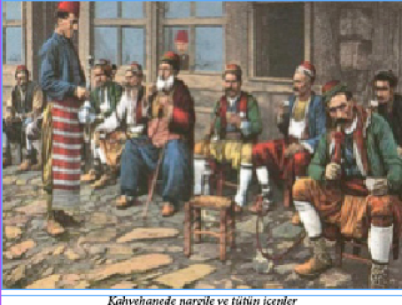

DEĞERBİLİR KAPTAN YUSUF PAŞA
17. yüzyıl başlarında Dalmaçya’da Nadin kasabasında sancak beyinin ahırında uşak olarak çalışan on üç yaşında bir çocuk vardı. Herkes tarafından horlanan bu çocuğa bir gün bir dul kadın acımış ve çıplak ayaklarına kocasından kalmış kocaman bir çift partal kundura giydirmişti. Nadin’den bir görev ile bir Kapıcıbaşı geçti, sancak beyinin konağında misafir oldu ve küçük ahır uşağının zekâ ile parlayan gözleri ve kir tabakaları altında kaybolmuş güzelliği dikkatini çekti, çocuğu yıkayıp temizlettikten sonra alıp İstanbul’a getirdi, saraya verdi. Enderun-u Hümâyun çocukları arasına katılan çocuğa güzelliğinden ötürü Yusuf adı verildi. Nadinli Yusuf kısa zamanda yükseldi. Kaptan Paşa oldu. Bir gün Nadin’e Kaptan Paşa’nın bir adamı geldi ve sancak beyine mühürlü, meşin bir torba verdi. Bir mektupta da şunlar yazılıydı: “Falan yerde oturan Marya isminde bir dul kadın vardır. Eğer sağ ise, bu torba kendisine sancak beyinin ve Nadin kadısının huzurunda verilecek ve bir senet düzenlenip bana gönderilecektir.” Kadın sağ idi, ama çok yoksul düşmüştü. Kadının ve sancak beyinin huzurunda, Kaptan Paşa’nın torbası kendisine teslim edildi. Torbanın içinde bir çift kocaman, partal kundura vardı ve içleri altınla doldurulmuştu. Yusuf Paşa kısa bir mektup yazmıştı: “Anacığım, bir kış günü donmuş çıplak ayaklarına bu kunduraları giydirdiğin kimsesiz çocuk ölünceye kadar seni unutmayacaktır.”
AT EVLİYASI
Tarihimizde Genç Osman adıyla da anılan II. Osman atı ‘Sisli Kır’ı o kadar çok severdi ki atı öldüğü zaman düzenlenen bir cenaze töreninin ardından Üsküdar’daki saray bahçesine gömülmüş ve başucuna da bir kitabe dikilmişti. Üsküdar’daki sarayın yıkılıp yerine Selimiye Kışlası ve camiinin yapılması sırasında atın mezarı da ortada bir yerde kalmıştı. Bu dönemde halk bu mezardan “At Evliyası” olarak söz etmeye başladı ve hastalanan atlar şifa bulsunlar diye bu mezara getirilmeye başlandı. Hasta atını buraya getiren sahibi atını mezarın çevresinde üç tur dolaştırıyor ve edilen duaların ardından atın iyileşeceği umuluyordu. Sonunda durum kontrolden çıkmaya başlayınca müze yetkilileri duruma el koydular ve bu değerli kitabeyi İstanbul Arkeoloji Müzesi’ne koyup mezarı da oradan kaldırdılar ve “At Evliyası” efsanesi böylece sona ermiş oldu. Boyu 96 cm. eni 72 cm. olan bu mezar taşının kitabesinde şu dörtlük yazılıdır:
Zılli Hak Hazreti Osman Hânın
(Hakkın koruyucusu Hazreti Osman Han’ın)
Sislikır nâm atı öğülmüştür
(Sisli Kır adındaki atı övülmüştür)
Emr-i Yezdan ile mevt irişicek
(Tanrı’nın emri ile ölüm erişince de)
Bu mekan içre o gömülmüştür
(Bu mekan içine o gömülmüştür)
Sene 1028 (Miladi: 1619)
LANETLİ 65. ORTA
Padişah Genç Osman’ı öldürenler, yeniçeri ocağının 65. ortasından idiler. İhtilâlden sonra bu orta (tabur) kaldırılmış olup, her ulufe dağıtımında sıra bu ortaya gelince, adı üç defa okunur, hiç ses verilmez ve üçüncü okunuşta yeniçeri başçavuşu: “Yoktur… ” diye seslenir, bunun üzerine ikinci avluyu doldurmuş olan yeniçeriler, hep bir ağızdan: “Yok olsun…” diye karşılık verirlerdi.
EN HAYIRLI AÇIK ARTTIRMA
Sultan IV. Murat kızı Kaya Esmehan Sultan’ı Melek Ahmet Paşa’yla evlendirir. Hanım Sultan ve eşi Melek Ahmet Paşa Boğaziçi’nde, Kuzguncuk’ta otururlar. Her yıl tekrarladıkları bir âdetleri vardır. Konaktaki fazla eşyayı her Ramazan kendi kapı halkına haraç-mezat satmak! Bu garip mezada katılanlar pek sevinirlerdi. Aldıkları eşyaya karşı vereceklerini seve seve edaya çalışırlardı. Belli günde mezatçı bağırır: “Bir altın sahan! Haydi bir kapaklı, altın sahan. Yok mu talibi?”
- Kaça? Kaça?
- Bir yetim okutmaya. Hadi bir yetim okutmak isteyen yok mu? İki yetim... Üç yetim...
Arttırma başlar. En fazla ödeyen talibine “altın sahan” verilirdi. Mezatçı pek süslü, mücevherli bir kılıç gösterir, gözler kamaşır, böyle böyle yetimler okutulur, dullar korunur, garipler gözetilirdi…
GECELERİ FENERSİZ SOKAĞA ÇIKMA YASAĞI
Sokakların devlet tarafından aydınlatılmadığı devirlerde böyle bir yasak, çeşitli bakımdan uygunsuz bir takım insanların türlü türlü kötülüklerini önlemek için zorunlu görülmüştü. Türkiye’de sokaklara fenerler konuluncaya kadar devamlı surette uygulanmış bir yasaktır. Hatta bazı olağanüstü durumlarda, özellikle İstanbul’da kopan ihtilâllerde, yatsıdan sonra her ne suretle olursa olsun gece sokağa çıkmak dahi yasak edilmiştir. Yatsıdan sonra sokağa fenersiz çıkma yasağı, en şiddetli bir şekilde IV. Murat zamanında uygulanmış, bu yüzden İstanbul’da sekiz-on sene içinde binden fazla insan idam edilmiş ve halka korku verilmişti.
Naima’nın aktardığına göre:
“Padişah bir gece Hocapaşa mahallesinde tebdil geziyormuş. Hocapaşa Camii imamının bir taze yiğit olan oğlu, yatsı namazından sonra camiyi kapamış, o civarda olan evlerine fenersiz giderken Sultan Murat’a rastlamış. Delikanlının yolunu kesen Sultan Murat gazapla: “Sen benim

yasağımı işitmedin mi?” diye bağırmış.
Delikanlı, padişahı karşısında görüp onun kızgın ve heybetli sesini işitince, donakalmış: “Padişahım… Ben imamın oğluyum… Camiye geç kaldım… Fener yok… Evimiz de şuracıkta…” diyecek olmuş ama kim dinler. Padişah yanındaki cellâda emretmiş, çocukcağızı kement atıp oracıkta boğuvermişler.”
Yine aynı şiddet devrinde, İstanbul’da geceleri yatsı namazından sonra evlerde ışık yakma yasağı konmuştu.
IV. MURAT DÖNEMİNDE TÜTÜN YASAĞI
Tütün memleketimize ancak 17. yüzyıl başlarında, I. Ahmet zamanında İngiliz gemicileri tarafından getirilmiş ve kısa bir zaman içinde, ayak takımından devlet büyüklerine ve ulemaya varınca her sınıf ve tabak arasında yayılmıştı. Sigara kağıdı on dokuzuncu asırda kullanılmaya başlandı; tütün her yerde olduğu gibi bizde de lüle içinde çubukla içilirdi. Zenginler arasında lüle çubuk, aynı zamanda bir ziynet eşyası haline getirilmiş, sanat eseri diyebileceğimiz, kıymetli taşlarla süslü murassa lüleler ve çubuklar yaptırılmıştı.
İlk şiddetli tütün yasağını koyan ve tütün içenlere aman vermeyip ölüm cezasına çarptıran IV. Murat’tır. Bir anarşi devrinde, henüz on dört yaşında iken tahta çıkan bu hükümdar saltanatının ilk yıllarında çok kanlı askerî ihtilâllerle karşılaşmıştı. Öyle ki, bir seferinde gözde yakınları elinden zorla alınarak idam edildikten sonra, kendi tahtı ve hayatı bile tehlikeye düşmüştü. On sekiz yaşına basıp devlet idaresini bizzat eline alınca da baskıcı bir hükümdar olmuştu. Hicrî 1043 (Miladî: 1633) yılı Safer ayının 27. Cuma günü İstanbul’da Cibali Kapısı dışında bir kalafat yerinde bir kalafatçı funda yakıp gemi kalafat ederken, ateş şiddetlenmiş, kol kol yayılarak tam yirmi dört saat içinde İstanbul’un dörtte birini kül etmişti. Yangından sonra halk arasında türlü dedikodular başlamış, bilhassa, tütün keyfi için gidilen kahvehanelerde genç padişahın uğursuzluğundan bahsedilir olmuştu. Bunun üzerine IV. Murat önce kahvehanelerin yıkılmasını ve yerlerine bekâr, nalbant ve debbağ odaları yaptırılmasını emretmiş, tütün içilmesini de yasak ettirerek tellallar vasıtasıyla tütün içenlerin aman verilmeyip idam edileceklerini ilân ettirmişti. Devrin ulemasından ve mutaassıp sofulardan Kadızade Mehmet Efendi de müthiş bir tütün düşmanı idi ve Padişahın da bu zata karşı hürmeti vardı. Kadızade Efendi Sultan Murat’ı tütün içenlere karşı amansız davranmaya teşvik edenlerden biriydi. İlk zamanlarda, halk tütün yasağına pek kulak asmamıştı, fakat bir duman keyfi uğruna kelle verenlerin sayısı kabardıkça, başta İstanbul gelmek üzere bütün imparatorluk halkını ciddî bir endişe aldı. Öyle ki, hemen her sabah sokaklarda, kırk-elli ceset görülüyordu. Cellâtlar tütün içerken yakalananların başlarını vurup kellelerini koltuklarının altına bırakıyor, padişahın emri gereği olarak da ne için öldürüldüklerini anlatmak için, tütün çubuğunu da kesik başın ağzına veriyorlardı. Tütün içenleri arayıp yakalamak için bir hafiye teşkilâtı kurulmuştu. Bunlar geceleri bir hırsız gibi şüphelendikleri evlerin, bekâr odalarının damlarına çıkarlar, bacaları koklayarak tütün kokusu ararlardı. Çünkü tiryakilerin (bir baskını olursa tütün içtikleri yere tütün dumanı ve kokusu sineceğinden) çubuklarını evlerinin ocakları içinde tüttürdükleri söyleniyordu. Bu hafiyeler yazın da mesire yerlerine dağılırlar, kırlarda çayırlarda tütün içen olur mu diye gözetlerlerdi. Hatta bizzat padişah yaz demeden kış demeden, gece gündüz kılık değiştirip gezerdi.
Tütün, içki, afyon gibi bütün keyif verici madde yasakları bu hükümdarın ölümüne kadar cezası idam olmak üzere bütün şiddetiyle devam etmesine rağmen keyif bağımlılığının önüne geçilememişti. İçe çekilecek birkaç nefes duman için ölüm tehlikesini göze alan tiryaki kahramanlar ve fedailer her zaman, her yerde bulunmuştu. Öyle ki, örneğin 1638 yılında, IV. Murat Bağdat seferine çıktığında, kendi kumandası altındaki Ordu-yi Hümayun’da bile gizli olarak tütün içenler pek çoktu. Ordu Üçpınar menzilinde konakladığında, gece kuytu bir yere çekilip tütün içen on bir kişi, kılık değiştirmiş dolaşan IV. Murat tarafından bizzat yakalanmış ve derhal idam edilmişlerdi. İçlerinden biri
Ütücüzade lakabıyla tanınan oldukça yüksek bir memur, biri de Kapıcıbaşı idi. Reha menzilinde de ikisi yeniçeri olmak üzere on dört tütün tiryakisi yakalanmış ve gündüz ordugâhta herkesin gözü önünde katledilmişlerdi. Halep’te yirmi kişi idam olunmuştu. Ordu ilerledikçe, her menzilde beşer, onar, yirmişer idam ediliyor, ibret olmak üzere, asılanlardan bazılarının çubukları ağızlarına verilerek teşhir ediliyordu. Fakat bu ölüm cezaları kimseye ibret olmuyor, sadece ortalığa dehşet saçıyordu.
Naima şöyle anlatır: “Bu tütünü içenlerin kimi orduda eli ve ayağı kırılıp siyaset olunur ve kiminin eli ve ayağı Otağ-ı Hümayun önünde kırılır, kimin boynu vurulurdu. Kimini dört parça ederlerdi.”
Bağdat Seferi sırasında bir gün gayet güzel cins bir at, üzerinde son derece kıymetli eyer takımı ile bağlandığı yerden boşanmış, başı boş gezen dolaşan padişahın otağı önüne kadar gelmişti. Orada yakalanan hayvan, sahibinin bulunması için tellala verilip ordu içinde gezdirilmiş ve kimse hayvana sahip çıkmamıştı. Bunun üzerine şüphe uyanmış, üzerindeki eyer araştırılmış, iç tarafta, gizli bir göz içinde bir tütün lülesi ve bir kese tütün bulunmuştu. Sahibinin başı korkusundan hayvanı feda ettiği anlaşılmıştı.
İDAMINDA BİLE ESPRİ YAPAN ŞAİR: NEF’Î
Vezir Bayram Paşa’ya yazdığı ve bir yerinde vezire
“sen kadar düşmen-i devlet mi olur a hınzır
(senin kadar büyük devlet düşmanı mı olur)
ne turur saltanatun sahibi bilsem a köpek”
(neden durur saltanatın sahibi, bilsem a köpek)
diye hitap ettiği şiirinden dolayı ünlü hiciv şairi Nef’î idama mahkum olmuştur. İdamına dakikalar kala, araya birilerinin girmesi sonucu, Dârüssaâde Ağası şairin affı için aracılık yapıp sadrazama mektup yazmayı kabul eder. Nef’î ise başında durmuş, mektubu yazan zenci ağayı seyretmektedir. Az sonra bir damla siyah mürekkep kalemden düşüp beyaz kâğıda damlayınca, Nef’î çenesini tutamaz ve zenci ağaya dönerek, ölümüne sebep olan son espriyi yapar: “Efendim, teriniz damladı!”
Ağa öfkelenip mektubu yırtarken, Nef’î cellâdın yağlı kemendine teslim edilir ve sarayın odunluğunda kementle boğularak cesedi denize atılır.
Ölümünden sonra kendisi için söylenen beyit meşhurdur:
“Gökten nazîre indi Sihâm-ı Kazâ’sına
Nef’i diliyle uğradı Hakk’ın belâsına”
IV. MURAT VE BEKRİ MUSTAFA
Osmanlı’da içki yasağının en amansız devri, kendi de içkiyi pek seven, hatta sonunda sirozdan10 ölen IV. Murat dönemi olmuştur. Ne kadar garip bir tesadüftür ki sarhoşların piri Bekri Mustafa da o devirde yaşamıştır; muhtemeldir ki ölümsüz şöhretini, o müthiş yasağa rağmen içki içmesi yüzünden ve Padişah’ın özel ilgisine uğrayarak başını cellât pençesinden kurtarmasından almış olacaktır. Bekri Mustafa üzerine nakledilen en güzel fıkralardan birini hatırlayalım:
10 Bazı kaynaklara göre, IV. Murat’ın ölüm nedeni gut (damla) hastalığıdır, ama aşırı alkol kullanımının her iki hastalığın da nedeni olduğu bilinmektedir…
Mustafa Üsküdar iskelesinde kayıkçılık yaparken, bir gün Sultan Murat ile Sadrazam Bayram Paşa kılık değiştirmiş halde gelirler ve özellikle koca ayyaşın kayığına binerler. Sahilden bir hayli açılınca, kayıkçı rakı testisini dikip birkaç yudum çeker. Sultan Murat: “Baba testiyi uzat, bir yudum da ben içeyim!” der. Mustafa güler: “Sen içemezsin oğul, içindeki su değil, rakı!” der. Padişah: “Niye içemeyelim?” deyince: “Tahammül edemezsiniz, belli olur, hem kendinizi hem beni yakarsınız!” der. Beriki ısrar edince testiyi uzatır… Yol aladursunlar, testi elden ele dolaşır… Bir ara Sultan Murat: “Baba, sen padişah yasağından korkmaz mısın?” diye sorar. Bekri Mustafa: “Korkarım, amma padişah beni burada nerden görecek?” der. Padişah: “Ya ben haber verirsem?” deyince: “Veremezsin, sen de içtin, kellemiz beraber düşer!” cevabını verir. Bunun üzerine çakırkeyif olan hükümdar: “Ya ben padişah, bu adam da Sadrazam Bayram Paşa ise!” deyince, Bekri Mustafa kürekleri bırakıp kahkahayı atar:
“Hay köftehor! Ben demedim mi tahammül edemezsin diye! Şunun şurasında iki yudum rakı içtiniz, biriniz padişah, biriniz vezir olmağa kalktınız!”
AFYON TİRYAKİSİ HEKİMBAŞI
Eski dönemlerde alkollü içki ve tütün gibi keyif vericiler yanında afyon da epey yaygındı. Özellikle alkolü haram kabul ettiği için kullanmayan ulema arasında afyon tiryakiliği boldu. IV. Murat’ın yasaklarla dolu baskı devrinde afyon kullanmak da yasak edilmişti. Padişahın bu yasağına kurban olanların başında kendi Hekimbaşı Emir Çelebi gelir. Kıymetli bir hekim, zarif ve rint bir adam olan Emir Çelebi’nin öldürülmesi Türkiye tarihinde bir eşine rastlanmayan olaylardandır. Çok şiddetli içki yasağına rağmen, padişahın gözdeleri, nedimleri, kendi de içkiyi seven hükümdarın içki âlemlerine katılırlardı. IV. Murat zaman zaman Hekimbaşı’nın durumunda değişiklikler sezerek keyif verici maddeler kullandığını hissetmiş ve bir gün “Efendi, sen afyon yutar mısın?” diye sormuştu. Zavallı Emir Çelebi başını kaybetme korkusundan yalan söylemiş: “Hayır Sultanım!” diye inkâr etmiş.
Padişahın gözde Silâhdarı Mahbub Mustafa Paşa himaye etmek istediği bir hekimi hassa hekimleri arasına almasını Emir Çelebi’den rica etmiş, Emir Çelebi de bu ricayı emir kabul ederek derhal yerine getirecek yerde: “Bir gedik boşalsın, verelim” demek gafletini göstermiş. Silâhdar Paşa da Hekimbaşı’ya bu nedenden kin bağlamış…
Emîr Çelebi gayet güzel satranç oynardı. Sultan Murat da namlı satranççılardandı ve bir gün Emîr Çelebi’yi çağırtmış, Silâhdar Mustafa Paşa: “Behey Padişahım! Ol tiryaki afyonunu yemeden gelemez!” demişti.
Sultan Murat: “Ben sordum, Emîr Çelebi afyon yemez ve padişahlara yalan söylenmeyeceğini de bilir” karşılığını verince, Mustafa Paşa: “Başı korkusundan gerçeği söylememiştir, Emir Çelebi afyon yer, ben de bunu size kanıtlarım!” demişti.
O sıralarda, yani 1638 yılında da, Sultan Murat Bağdat Seferi’ne çıkmıştı. Yolda Silâhdar Paşa, Emir Çelebi’nin özel hizmetkârlarından bir oğlanı para ile elde ederek efendisinin afyonunu nerede sakladığını ve ne zamanlar yuttuğunu öğrenmişti. Anlatan tarihçinin deyimiyle “bu veled-i zina” birkaç akçeye tamah edip velinimetinin sırrını ifşa etmiş: “Afyonunu ben hazırlarım, bir altın hokkası vardır, çakşırının içindeki entarisinin cebinde saklar, padişahın yanında fazlaca kalırsa, abdest bahanesiyle kalkar, keyfini tazeler” diye haber vermişti. Ordu Nizip menziline geldiğinde IV. Murat, Emir Çelebi’yi yine satranç oynamağa otağa çağırmıştı. Oyun arasında Hekimbaşı abdest bahanesiyle kalktığında, Silâhdar Mustafa Paşa: “Hekimbaşı afyonunu yutmaya gitti!” demişti. IV. Murat “Mustafa! Bu biçareye niçin iftira edersin, ne istersin?” deyince, garazkâr Mustafa Paşa: “Padişahım entari ceplerini yokla, afyon çıkmazsa ben yalancı, müfteri olayım!” demişti. Emir Çelebi huzura dönünce, Sultan Murat entari cebinde ne var ise çıkarmasını emretmiş, düşman hilesine uğradığını gören Emir Çelebi de altın hokkasını çıkarmıştı. Sultan Murat: “Efendi, bu nedir?” diye sorunca, Hekimbaşı biraz tereddütten sonra itiraf etmiş: “Padişahım ıslah olunmuş, zararı gitmiş afyon özüdür!” demişti. Altın hokkanın içinde tahminen on dirhem kadar afyon varmış… O anda gazaba gelen, fakat gazabını gizleyen hükümdar: “Eğer zararı gitmiş ise, hepsini ye de görelim!” diye emretmişti. Emir Çelebi birkaç küçük parça yuttuktan sonra: “Bu kadar yeter padişahım! Kuluna yazıktır. Bu hokkanın içindeki panzehir dahi olsa hepsi yenmez!” diye yalvarmış, fakat kızmış olan padişah, Emir Çelebi’ye hokkanın içindeki afyonun hepsini yedirmiş ve zorla satranç tahtasının başına oturtmuştu: “Sen bir hekimsin! Yediğin zehrin zararını da defedersin!” demiş ve birbiri arkasından zor ile üç oyun oynatmıştı ve tabii bu müddet zarfında, Emir Çelebi, zorla yediği on dirhem afyonun vücudunda yapacağı etkiyi giderecek tıbbî müdahaleyi yapamamıştı. Nihayet satranç tahtası önünde düşüp bayılınca çadırına götürülmüş, hizmetkârları telâş içinde tedavisine koşmuşlar, Emir Çelebi: “Bana artık ilâç gerekmez, Silâhdar gibi bir düşman zamanında ölüm, yaşamaktan hayırdır, bana bir kâse karlı buzlu şerbet verin!” demiş ve sunulan şerbeti içtikten sonra da ölmüştü.
ARABA YASAĞI
17. yüzyıl ortalarında, 1647 yılında da, bir sinir hastası olan Sultan İbrahim, İstanbul şehrinin içine gündüzleri araba girmesini yasak etmişti. Bir gün Davutpaşa’daki bir üfürükçü hocaya okunmaya giderken yolda bir arabaya rastladı. Son derece sinirlendi ve bu basit zabıta olayından sadrazamı sorumlu tuttu. Sadrazam Boşnak Salih Paşa’yı (ki değerli, namuslu bir vezir olarak bilinirdi) gittiği üfürükçünün evine çağırttı ve hazırda başka ip bulunamayınca, koca sadrazamı gözünün önünde bir kuyu ipi ile boğdurttu.
Tarihçi İsmail Hakkı Uzunçarşılı ise Vecihî Tarihi’ne yaptığı bir atıfla, Boşnak Salih Paşa’nın aslında padişahın tahttan indirilmesi konusunda çalışmalar yaptığı ve durumun Şeyhülislam Abdürrahim Efendi tarafından Valide Sultan’a bildirilmesi sonucu öldürüldüğünü, araba yasağı ihlalinin basit bir bahane olduğunu öne sürmektedir.
ATEŞTEN DİLEKÇE
17. yüzyılın ikinci yarısında, görülen haksızlık ve zulümden bizzat padişaha şikâyet edebilmek için, huzura çıkamayanlar son bir çareye başvurmuşlardı. Padişahın sahil saraylarından birinde pencere önünde oturması gözlenir ve hemen bir kayık ile denize açılarak, içinde saman, talaş, hasır parçaları veya ziftli paçavralar bulunan bir kap baş üstüne konulup tutuşturulurdu. Bu “Padişahım, her taraftan gördüğüm haksızlık ve zulüm ile artık başımda ateş yanıyor. Son ümidim sendedir, sana sığınıyorum, fakat beni senin yanına sokmuyorlar!” demekti. Bunu gören padişah derhal şikâyetçiyi huzuruna getirtir, derdini dinleyerek gereken emirleri verirdi. Ateşten dilekçelerin en parlak örneği Naima Tarihi’nin dördüncü cildinde 1648 yılı için anlatılmaktadır:
“Yedi tane İngiliz tüccar kalyonu Galata önünde derya ortasında ak bayraklar çekip bütün mürettebatı güverte üzerine dizilir, başlarında birer bakraç zift yakıp bağrışmağa başlarlar. Derhal saraydan adam gönderilip durum öğrenilir. Gemideki mallardan önce ticari anlaşmalarla belirlenen % 3 yerine % 6 gümrük vergisi alınmış, sonra da satın alınan takriben 15.000 kuruşluk mallarının bedeli ödenmediği gibi, gemi kaptanlarına limanı derhal terk etmeleri emredilmiş… ‘Bu mezalim üzerimizden kaldırılsın, yoksa gemilerimizle beraber ateşlerde yanarız’ demek isterlermiş. Bunu öğrenen Sultan I. İbrahim, hemen Çavuşbaşı Ağa’yı Sadrazam Tezkereci Ahmet Paşa’ya11 göndererek İngilizlere yapılan haksızlığı tamir ettirmiş.”
11 Ölümünden sonra yaşanan hazin olaydan ötürü, bu sadrazam aynı zamanda Hezarpâre (Bin Parça) Ahmet Paşa olarak da bilinecektir.
ESKİ BİR HAMAM YÖNETMELİĞİ
Aşağıdaki satırlar Sultan İbrahim’in ilk saltanat yıllarında, 1640 (Hicrî 1050) senesinde düzenlenmiş bir narh defterinden alınmıştır. Zamanımızdan 372 yıl önceki İstanbul hayatında, bir çarşı hamamında, hamamcı ve hamam müstahdemlerinin uymaları gereken düzeni göstermesi, belli başlı yasakları belirtmesi açısında pek değerlidir:
• Hamama gusül için girenden bir akçe alına, kese sürünüp tıraş olandan iki akçe alına. Hamamcıya mürüvveten12 fazla verilen bahşiş reddolunmaz. Müşteri mürüvveten tellak ve natıra akçe verse de hamamcı onların ücretini yine verir.
12 Mürüvveten: İnsaniyetlikten ötürü.
• Müşteri, özellikle yoksullar ve dışarlıklı misafirler mürüvveten akçe vermedikçe tellak ve natır akçe talep etmeyeler,
• Tellak müşteriyi tıraş ederken boynuna peştamal tuta ki teri üzerine akmaya,
• Müşteriye riayet olunup pak ve kuru peştamal ve silecek verile,
• Tellak ve natır ipek peştamal kullanalar,
• Müşteri istediği tellağı tutabile,
• Tellak ve natır, müşteri çıkarken (bahşiş için) müşteriyi göz hapsine almayalar,
• Kefere için halvetten özel kurna olup Müslümanlara zahmet vermeyeler ve halvete girmeyeler,
• Keferenin avratları da erleri gibi, Müslüman avratlarından ayrılıp en aşağı yerde soyunup kurnaları dahi ayrı ola…
CELLÂT İŞKENCELERİ
Eski zamanlardan bugüne, mahkûmları konuşturmak için cellâtlar tarafından işkence yapılması en sık karşılaşılan insanlık dışı uygulamalardan biridir. Osmanlı döneminde uygulanan işkencelerden bazıları şunlardı: Ustura ile diri diri deri yüzmek, saçları kesilen başa ateşte kızıl hale getirilmiş demir tas giydirmek, sinirleri cımbızla çekmek, bir organın içine sonda gibi burgu sokmak, kaynar sudan soğuk suya ve soğuk sudan kaynar suya sokup çıkartmak, çekiçle kol ve bacak, el ve ayak kemiklerini kırmak… İdamından önce kendisine bu korkunç işkenceler uygulanmış devlet adamları bile olmuştur ki bunlar arasında 17. yüzyıl başdefterdarlarından Yahnikapan Abdülkerim Paşa13 ile Sadrazam Melek Ahmet Paşa’nın kethüdası (içişleri bakanı) Gadde kethüda da vardır...
13 Osmanlı kaynakları, Başdefterdar Yahnikapan Abdülkerim Paşa’ya ‘Yahnikapan’ lakabının öğrenciliği yıllarında Sultan Bayezid İmarethanesi’nde öteki medrese öğrencileriyle birlikte yemek yerken ‘yemeklere karşı sergilediği şiddetli hücum’ nedeniyle verildiği ve paşanın o günlerde herkesin önündeki yemeği alıp midesine indirmesiyle ünlü olduğu anlatılır.
Usulen, bir devlet adamı idama mahkûm olunca ferman kendisine Bostancıbaşı tarafından eteği öpülerek hürmet gösterilerek tebliğ edilir, teselli yollu sözler söylenir ve abdest alıp iki rekât namaz kılmasına izin verilirdi. Bu tebliğ de çoğunlukla metanetle karşılanırdı. Örneğin, Viyana bozgunundan sonra, Belgrat’ta idam edilen Merzifonlu Kara Mustafa Paşa namaz kıldıktan sonra “vücudum toprağa düşsün” diyerek odanın kilimlerini toplatmış, uzun sakalını kendi eliyle kaldırarak cellâdın kemendi geçirmesine yardım etmiş ve cellâda “sanatını maharetle yap” demişti.
Cellât gönderilip taşrada idam edilen siyasî mahkûmların başı hükmün infazından sonra, yolda bozulmaması için bal doldurulmuş bir kıl torba içinde, cellât tarafından İstanbul’a getirilir ve payitahtta yıkandıktan sonra teşhir ve defnedilirdi.
PADİŞAHTAN ANNESİNİ İSTEYEN MECZUP
17. yüzyılda Osman Dede isminde bir meczup, Aksaray’da yeniçeri kulluğunun önündeki kaldırımda tam elli yıl yaz ve kış boyunca anadan doğma bir şekilde oturmuştu. Yerinden yalnız geceleri, zorunlu ihtiyaçlar için kısa bir zaman için ayrılırdı. Bir gün, kılık değiştirmiş gezen hükümdar IV. Murat’a: “Murat! Murat! Dul ananı bana nikâhla verir misin?” diye lâf atmış, bu amansız padişahtan anası Kösem Sultan’ı istemişti. Herkes Osman Dede’nin idam olunacağını tahmin etmişti. Fakat Sultan Murat saraya döner dönmez bir kriz geçirdi; bu kendisinin ölümüne sebep olacak olan siroz krizi idi. Nitekim hemen yatağa yattı. Osman Dede bir müddet sonra kaldırım üstünde eceliyle öldü.
BİR ŞAİRİN CENAZESİ
17. yüzyılın büyük şairi Şeyhülislâm Yahya Efendi öldüğü zaman cenazesi o kadar kalabalık olmuştu ki Fatih Camii’nde kılınan namazından sonra cenaze alayı yapılamadı, herkes olduğu yerde durdu ve tabut Çarşamba’daki kabre kadar, elden ele yürüdü.
CELLÂT KARA ALİ
Osmanlı tarihindeki en meşhur ve en korkunç cellâtlardan biri Kara Ali’dir. Sultan İbrahim’in de cellâdı olan Kara Ali tarihe ‘padişah cellâdı’ olarak geçmişti. Evliya Çelebi Kara Ali ve yamaklarının giyimlerinden, sürekli üstlerinde taşıdıkları idam ve işkence aletlerinden söz ettiği bir betimlemesini şu cümleyle tamamlar: “Amma ne’uzü-billah hiç birinin çehresinde nur kalmamış, zehir gibi âdemlerdir.”
Cellât Kara Ali, Sultan İbrahim’den önce sadrazamı Hezarpâre Ahmet Paşa’yı boğmuştu. Sadrazam Sofu Mehmet Paşa’nın emriyle Sultan İbrahim’i boğmak üzere, hapsedildiği küçücük hücresine gitmek zorunda kalan Cellât Kara Ali, padişahın haykırışlarına dayanamayarak kaçmıştı. Cellât Kara Ali’den daha gaddar olan Sadrazam Sofu Mehmet Paşa, cellât ve yamaklarını yaptığı baskıyla Sultan İbrahim’in hücresine zorla sokmuştu. Kara Ali yamaklarının da yardımıyla gözyaşları içinde infazı gerçekleştirmiş, Sultan İbrahim’i boğarak öldürmüştü. 1664’te ölen fakat ölüm sebebi bilinmeyen Kara Ali’nin yattığı yerin Karyağdı bayırındaki cellât mezarlığı olduğu tahmin edilmektedir.
YENİÇERİ KOLLUKLARI
Eskiden, bir yeniçeri kolluğu önünden ulemadan, vezirlerden biri veya semtin sevilen sayılan bir siması geçince, kolluk çorbacısı veya neferleri, eğer kapının önünde iseler, ayağa kalkıp hürmetle selam verirlerdi. Çöküş devrinde ise, kolluk önünde iskemleler atıp oturan veya hasırlar serip üstüne laubali tavırlarla uzanıp yatan yeniçeriler, sabahtan akşama kadar tambura çalarlar, mâni ve destanlar okurlar, gelip geçene ayağa kalkıp selam vermek şöyle dursun, alay ederlerdi. Hatta akşam karanlığında ve geceleyin kolluk önünden geçmek gafletini gösteren namuslu vatandaşları: “Senden şüphelendik, buralarda ne dolaşırsın? Üstünü arayacağız!” diye zorla içeri alıp, saat, kese ve çubuk gibi kıymetli eşyası varsa alırlardı. Soyulan zavallı ise çalınan mallarını canını kurtarmanın fidyesi bilip ağzını açmadan giderdi. Kendi mıntıkaları içinde oturan Müslim ve gayrimüslim tüccarlar ise “kolluk haracı”na bağlanmışlardı. Elinden kan çıkan, cinayet işleyen biri doğruca kolluğa sığınır, onlar da: “Bu delikanlı yoldaşımızdır, ölenin diyetini ortamızın vakıf akçesinden veririz” derler, maktulün tarafı da, ‘kabul etmem’ diyemeyeceği için, birkaç yüz kuruşla davalarından vazgeçirtirler, korudukları katili ise adamın gücü ölçüsünde soyarlardı. Paskalya vesaire yortu günlerinde, zengin Hristiyanların yolunu çevirip izzet ve ikram ile kolluğa alırlar, rakı ve şarap ikram ederler, kendileri de Hazreti İsa aşkına kadeh devirirler ve arkasından bezirgânın önüne bahşiş tabağını dayarlardı.
ESKİ ZAMAN LOKANTALARINDA FİYATLAR
Bugünlerde belli boydaki tabakların göz doyuracak biçimde doldurulmasıyla yapılan yemek servisinin eski İstanbul’da ağırlık, sayı ve lokma hesabı ile yapıldığını çeşitli dönemlere ait narh defterlerinden öğreniyoruz. Bugün bize tuhaf gelir ama örneğin Sultan İbrahim zamanında, 1640 yılında düzenlenmiş narh defterine göre, o devirde şiş kebabı arşın14 üzerinden; yahni, kuşbaşı kebap, pilav tartı ile ve lahana dolması sayı ile satılmaktadır, işte defterin aşçılara ait olan bendi:
14 1 arşın = 68 cm.
Koyun yahnisi (okkası15) = 18 akçe
15 1 okka = 1200 gr.
Sığır yahnisi (okkası) = 9 akçe
Halis koyun etinden köfte (on dirhemi16) = 1 akçe
16 1 dirhem = 3 gr.
Lahana sarması (20 tanesi) = 1 akçe
Ciğer kebabı (40 büyük lokması) = 1 akçe
Pirinç pilavı (100 dirhemi) = 1 akçe
Şiş kebabı yarım ziralık17 (bir şiş dolusu) = 1 akçe
17 1 zira = 1 arşın (1 zira’nın uzunluğu yetişkin bir erkeğin dirseğinden orta parmak ucuna kadar olan uzunluk olduğundan dolayı, bazı kaynaklarda 1 zira’nın uzunluğu 70 – 85 cm. arasına kadar kabul edilebilmektedir.)
LOKMA LOKMA DOĞRANAN VEZİR
Sultan İbrahim’in son sadrazamı Tezkereci İstanbullu Ahmet Paşa kalemden yetişmiş, bilgili, zeki bir devlet adamıydı. Bir sinir hastası olan bu padişahın da güvenini kazanmıştı. Kendisinin yeniçeri ocağı ağalarıyla iyi geçinmemesi, hatta o devirde birer zorba kesilmiş olan ocak ağalarına karşı bir suikast hazırlaması ve Kösem Sultan’ın da oğlu Sultan İbrahim’den nefreti ve onu tahttan indirmek için yeniçeri ocağı ağalarıyla anlaşması, İstanbul’da bir hükümet darbesine neden olmuş, sadrazam idam edilmişti. Padişah da hemen ardından tahttan indirilip birkaç gün sonra boğdurulmuştu. Ahmet Paşa şişman bir zattı. İdamından sonra cesedi çırılçıplak soyularak cellâtlar tarafından bir hamal beygirine çaprazvari atılmış ve götürülüp At Meydanı’na bırakılmıştı. İhtilâlci yeniçerilerden birkaç zorba fırsatı ganimet bilip cahil halkın batıl inançlarından istifade ederek “insan yağı eklem ağrılarına ve sızılarına devadır” diye Ahmet Paşa’nın etlerini lokma lokma doğrayarak beşer onar akçeye satmışlardı. İstanbul’da da bu kadar korkunç, tüyler ürpertici devayı satın alarak kollarına, bacaklarına sürüp bağlayabilecek o kadar çok cahil ve katı yürekli insan çıkmış ki, paşanın iri yapılı vücudu neredeyse bir iskelet halinde kalmıştı. Ölümünden ve cesedinin bu feci sonundan sonra kendisine “hezarpâre” (bin parça) lakabı verilmişti. Sağlığında Tezkereci Ahmet Paşa olarak bilinen talihsiz sadrazamın adının sonradan Hezarpâre Ahmet Paşa olmasının nedeni bu olaydır.
DENİZ GÖRMEZ CEVRÎ İBRAHİM ÇELEBİ
İstanbul’da doğmuş, yaşamış ve ölmüş olan 17. yüzyılın namlı şairlerinden Cevrî İbrahim Çelebi (1595 – 1654) ömrü boyunca deniz ulaştırma araçlarına binmemişti. Tarihi yarımadadan Galata’ya veya Tophane’ye gidecek olsa, Kâğıthane’den atla dolaşır ve Alibey Deresi ile Kâğıthane Deresi’ni köprülerden geçerdi. Anadolu yakasına ise ömründe hiç gitmemişti.
Kimseyle görüşmeyen Cevrî’nin cenazesine pek kimse gelmemişti. Melami Bayramı tekkesinin önemli simalarından olan, eserlerini temize çektiği Sarı Abdullah Efendi’nin, yanında gelen yirmi-otuz kişi ile birlikte cenazeyi Eğrikapı Savaklar’daki Cemalleddin Uşşaki tekkesi civarında bir yere gömdüğü belirtilmektedir.